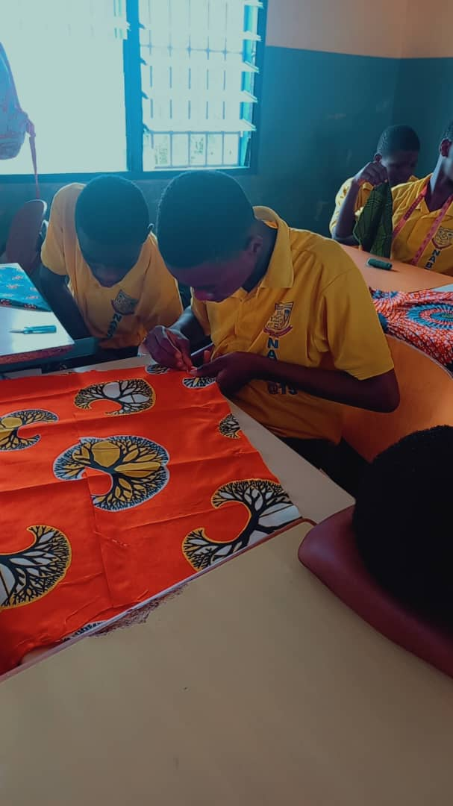
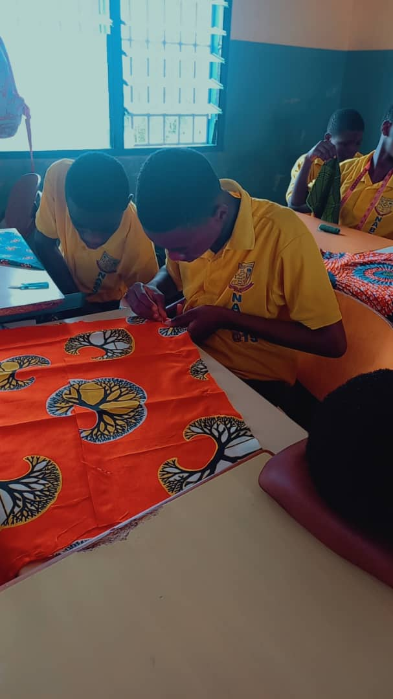

Our Mission
To provide a comprehensive and inclusive education environment that nurtures the intellectual and emotional growth of all children,
while also promoting the development of resilience, creativity, and personal growth. Our mission is to create a safe,
supportive, and inclusive learning environment where every child has the opportunity to thrive.
Hard-work : The Path to Achievement
At Natural Brains Academy, we believe that the pillars of hard work and discipline form the foundation for success in academics, personal growth,and future endeavors. Our commitment
to these core values is reflected in everything we do, from our rigorous academic programs to our diverse extracurricular activities. Our curriculum is designed to challenge students and
promote critical thinking. Through diligent study and persistent effort, our students consistently achieve outstanding academic results.Extracurricular Activities: From sports to arts to clubs,
our extracurricular programs encourage students to pursue their passions and develop new skills. Participation requires dedication and hard work,leading
to personal and collective achievements.
Discipline: The Key to Character Building
Discipline is the cornerstone of our education. educators strive to instill a sense of pride and self-reliance in our students,
encouraging them to work hard and consistently, even when faced with challenges. Our school policies and
codes of conduct are designed to create a safe and orderly environment conducive to learning. We believe that clear expectations and consistentbr
enforcement of rules help students understand the
importance of discipline.
Life Skills: Discipline teaches students time management,
goal setting, and the ability to delay gratification. These skills are invaluable in both academic settings and in life beyond school.

 
